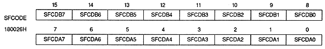
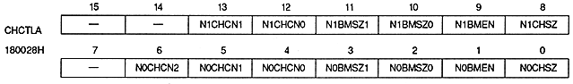
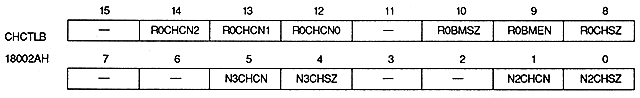

Special function code bit : Special function code bit (SFCDA7 to SFCDA0, SFCDB7 to SFCDB0)
SFCDA7 ~ SFCDA0 | 180026H | bits 7 to 0 | For special function code A |
SFCDB7 to SFCDB0 | 180026H | bits 15 to 8 | Special Function Code B |
bit name | dot color code |
SFCDx0 | When the lower 4 bits of the dot color code are 0H or 1H |
SFCDx1 | When the lower 4 bits of the dot color code are 2H or 3H |
SFCDx2 | When the lower 4 bits of the dot color code are 4H or 5H |
SFCDx3 | When the lower 4 bits of the dot color code are 6H or 7H |
SFCDx4 | When the lower 4 bits of the dot color code are 8H or 9H |
SFCDx5 | When the lower 4 bits of the dot color code are AH or BH |
SFCDx6 | When the lower 4 bits of the dot color code are CH or DH |
SFCDx7 | When the lower 4 bits of the dot color code are EH or FH |
Set value | Processing |
0 | Do not use special features |
1 | Use special features |

